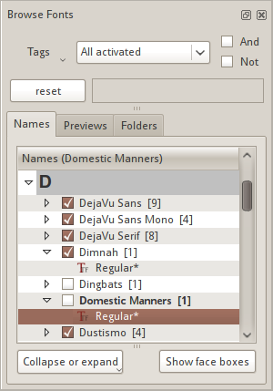
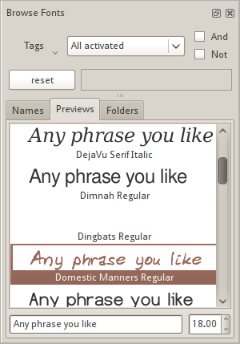
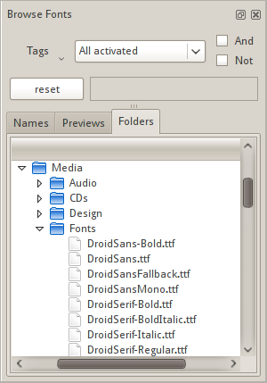

Fontmatrix has both traditionally and not quite traditionally implemented functionality.
Most important user interface parts you will see are:
There is nothing special about menu bar in Fontmatrix. Menu items are logically divided into 7 top level menus:
Main area of the window is using tabbed interface to split different functionality. First three tabs (Font Information, Sample Text and Glyphs) are related to viewing fonts. The other three tabs (Playground, Classification and Compare) are related to refining selection of fonts and selecting exactly the ones you need by means of comparison.
Main area and Browse Fonts sidebar have mostly one-way connection: changes in the Browse Fonts sidebar affect content of the main area and not the other way round:
The only exception is Classification tab which has two-way connection with the sidebar: it both updates list of fonts in the sidebar to filter fonts that have particular PANOSE defined characteristics and reacts to changes in the sidebar.
This sidebar is the gateway to your fonts collection. What it does apart from letting you search for fonts using metadata queries (discussed in a dedicated chapter) is a) listing fonts already added to the database and b) listing fonts available in the local system and mounted remote systems. This functionality is divided into three tabs.
Fonts that are already added to the database are listed here and sorted alphabetically by the first letter of a font's typeface. They are also grouped in several levels: the first level in initial letter of a name, the second level is name of the typeface and the last level is name of the variant (style). Activation and deactivation of fonts is explained separately.

Clicking Collapse or expand opens a drop-down menu with items controlling view of the hierarchy described before: you can either collapse or expand items up to the first letter group (upper level).
Show face boxes button toggles visibility of checkboxes in front of font family faces allowing or forbidding you to selectively activate or deactivate them in the system.
In this tab Fontmatrix renders samples of a short text with every filtered font sorted alpahabetically.

The text and font size of previews can be changed below previews. If you use some custom text, you might like turning on subtitles for every preview telling you what font is used. This can be done in Display tab of Preferences dialog along with choosing font and font size used for those subtitles.
By default however previews render names of fonts themselves. This is done using special commands with self-explanatory names: <name>, <family> and <variant>.

You can preview typefaces of installed fonts listed in the Windows Fonts view, typefaces of fonts listed in the List view, or you can select any folder in the Folders view preview all typefaces located in the selected folder.
This is where you manage tags and assign them to currently selected fonts. Detailed information on using tags to manage your fonts collection is provided in a dedicated chapter.
Status bar in Fontmatrix isn't really used as extensively as e.g. in Inkscape. The left part displays hints for menu items. The right side names the currently selected font and lists amount of currently filtered fonts.
System tray, also known as notification area, is usually located somewhere on desktop environment panel (or one of the existing panels). Its function is to hide windows of applications that you don't want to see all the time.
Because you still might want to control some of these applications (even frequently sometimes), clicking on icons in the notification area usually either toggles visibility of the main window of an application or display a menu with various items. This is exactly how it works for Fontmatrix: right mouse button click toggles visibility of the main window, and left mouse button click reveals a menu. Since this is a highly optional feature, you can enable or disable it from Preferences dialog. Detailed information about this functionality is provided in a dedicated chapter.